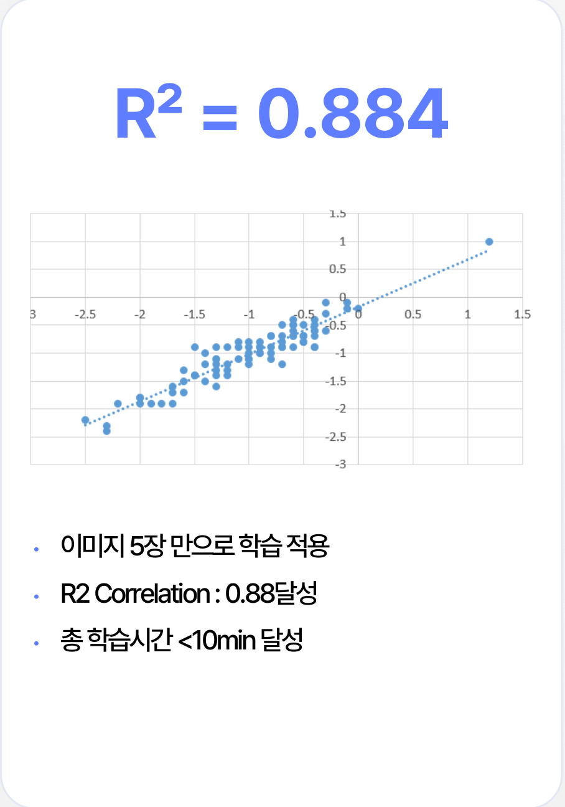

← All projects
SK hynix / Computer Vision
Few-Shot SEM Domain Adaptation
Research team member · Jan 2025 – Dec 2025
5 target images
R² = 0.88
Problem definition
New SEM image distributions require adaptation with limited paired target-domain data.
My contributions
Designed and evaluated lightweight CNN adapters to adapt the restoration model without retraining the full model.
Method overview
Target-domain pairs
CNN adapter training
Adapted restoration
Evaluation

Results
R² = 0.88 using five target-domain images; training converged within ten minutes.

Technical focus
CNN adapters · Few-shot adaptation
Industrial data, internal source code and non-public implementation details are not included.